Alkanes preparation
Alkanes reactions
Alkenes preparation
From alkynes

Alkynes preparation
From di-Halides

Alkyne-Halide to form larger Alkynes
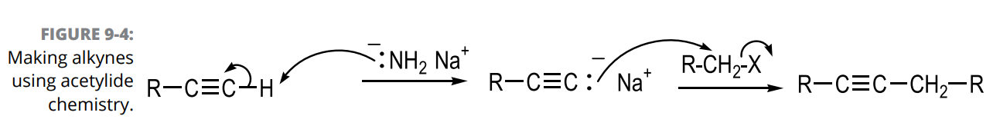
Alkynes reactions
Alkyne TO alkene and alkane
Alkyne TO carbonyl

Alkyne TO halides


Alcohols preparation
Hydrolysis
Reduction of carbonyls

Grignard Additions

from Organohalide

Alkenes to Halohydrins

Diols from reactions with alkenes

Alcohols reactions
Conversion of Alcohols into Alkyl Halides
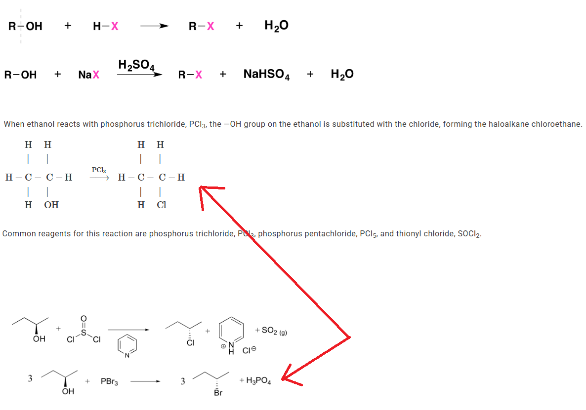
Conversion of Alcohols into Tosylates
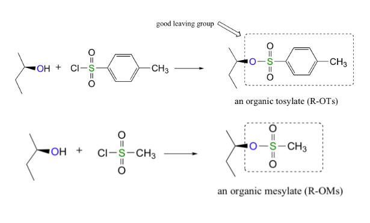
Using Sulfonate Esters for Stereochemical Control

Dehydration of Alcohols to Yield Alkenes

Conversion of Alcohols into Esters

Oxidation of Alcohols

Conversion of Alcohols into Ethers
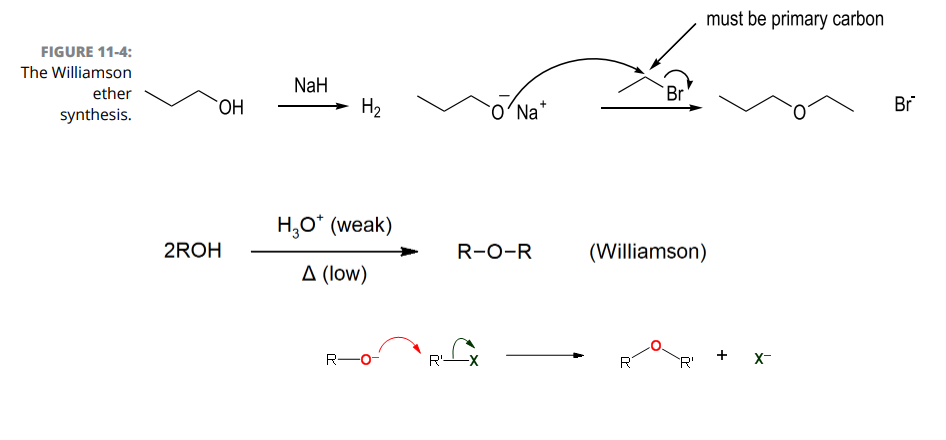
Reaction of alcohols as acids
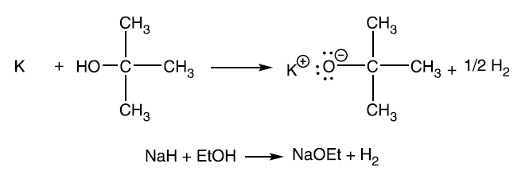
Ethers preparation
Dehydration
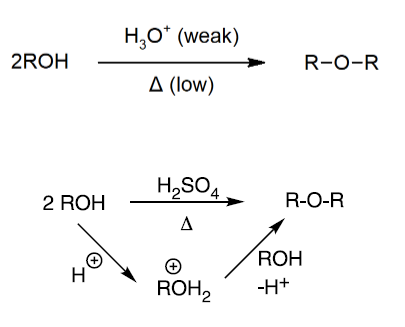
Williamson Synthesis
Alkoxymercuration

Cyclic Ethers - Epoxides
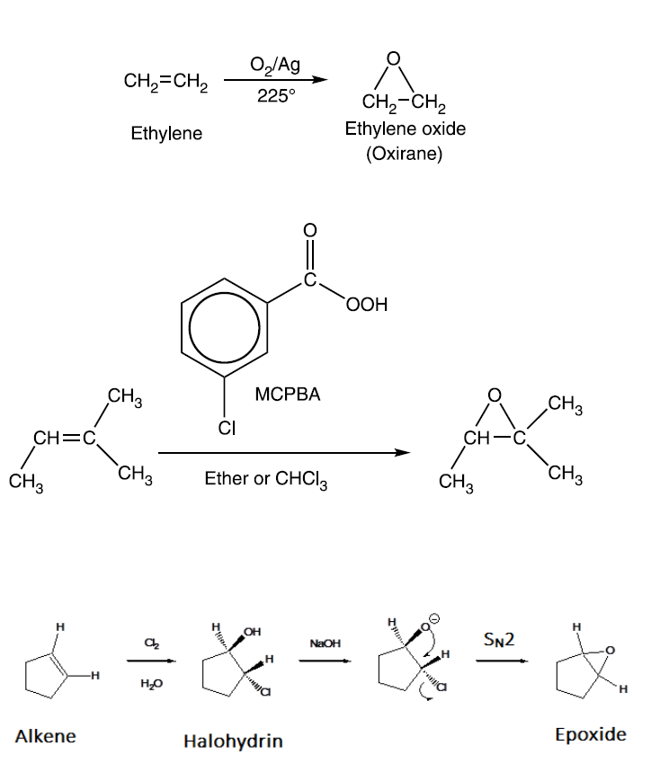
Ethers reactions
Acidic Cleavage of Ethers
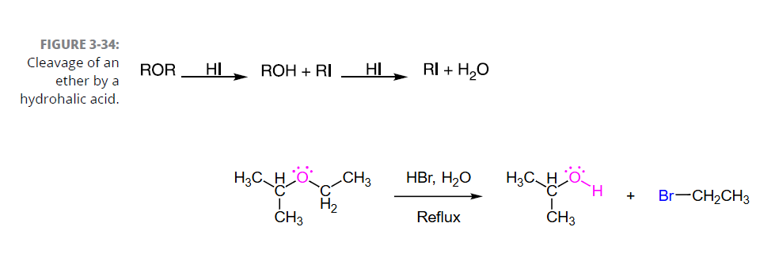
Claisen Rearrangements
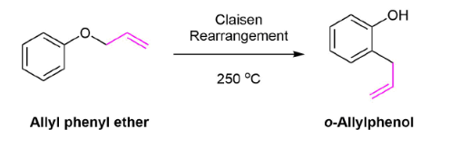
Epoxide Ring-Opening by Alcoholysis
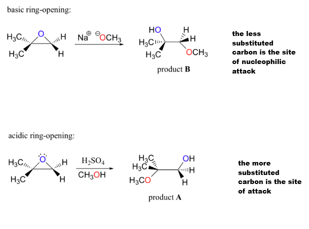
Epoxide Ring-Opening by Hydrolysis

Epoxide Ring-Opening by HX

Epoxide Ring-Opening by Other Basic Nucleophiles
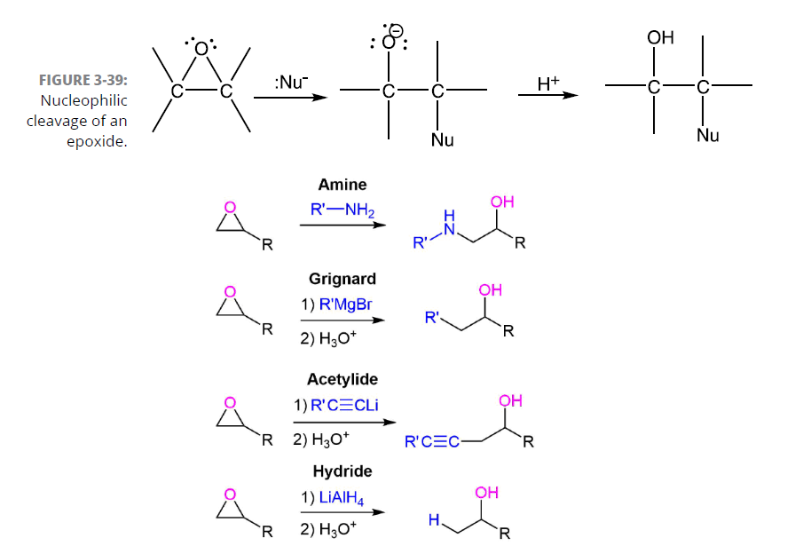
Carbonyls preparation
Carbonyls reactions
Esters preparation
Esters reactions